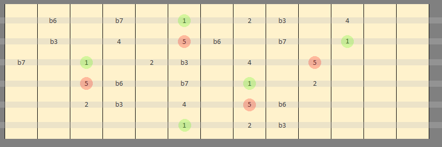
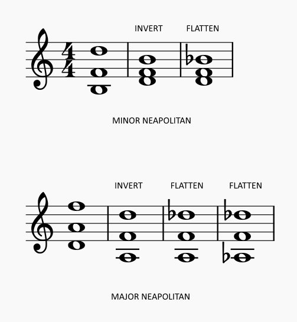
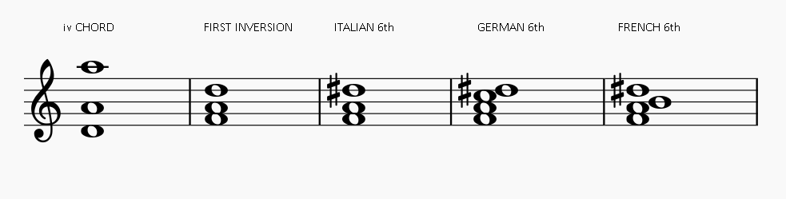

GROWL
I'd rather be playing guitar
 EN
EN
This week I want to talk about Neapolitan chords, sometimes called Neapolitan 6th chords(N6). If you know a bit about chord construction this will be easy, if not please go check out my chord building articles. I will also be introducing a new handy diagram in this article that shows all reachable intervals from a given root. I will use no ice-cream puns.
There is nothing particularly tricky about N6s or augmented 6ths, they are just added vocabulary for your progressions and re-enforcements for your cadences. They come in several flavours; vanilla, French, Italian and German and whilst prevalent in minor keys can also appear in major.
This handy diagram shows what I consider to be all the reachable minor scale intervals from a 6th string root note. You might disagree to some extent based on hand size and flexibility. I tried to include only what I think is achievable for most players, don't strain yourself!
We can use this diagram to overlay our chords and thus see what is going on in terms of the inner workings of the chord.
VANILLA NEAPOLITAN (your basic flavour)
The basics of creating a N6 in minor is to take the ii chord (in A minor that's a diminished B chord) and put it in first inversion. That's just taking the bass note and playing it up top. The creation of a 6 interval is the reason for the name Neapolitan 6th. So in A minor; instead of BDF we now have DFB. Next we take the original root and we flatten it, creating DFBb. We now have the interval of a minor third between the first two notes and the interval of a fourth between the second two. There is also an augmented fifth interval between the new root (D) and the now altered fifth (Bb). You should see that this doesn't confirm to any other type of triad, it is kind of an augmented minor triad if you will.
The process is the same for major scales except we perform the added step of flatting the 5th of the ii chord as well as the root. So if we start with DFA (in C major); we get the inversion FAD, then FADb, then FAbDb. Why do things differently in major? Well if you look at FADb, it is just an augmented triad, we haven't made anything new. It is the final step of flatting the fifth aswell that gives us a minor third on the bottom and then a fourth on top.
We can see pretty quickly then that it is the augmented fifth interval that gives a N6 chord a lot of it's colour. I think of the augmented interval as kind of spacey sounding. Cue slow pan along the starship Enterprise.
NEAPOLITANO CHORDISSIMO! (ITALIAN)
The Italian version of the altered 6th chord is sometimes called the Italian 6th (I6). It differs from our vanilla flavour as it has consummate fashion sense and is unable to create stable political systems. No actually, it's because it is created from the iv chord rather than the ii and we sharpen the root rather than flatting it. The other augmented 6ths are basically modifications of this one because let's face it the Romans started everything.
GERMAN SIXTH
The completely straightforward and non-humorous explanation for the German augmented sixth is that it is just like the Italian but you add in the flat third of the key. So if in A minor we started with a iv chord of DFA, inverted to FAD, augmented to DFA#, we finally add the C from A minor to complete DFCA#.
FRENCH SIXTH
This one has a certain "je ne sais quoi" as you might expect. Instead of adding the third of the key like we did in the German, we now add the two of they key. We've now got internal intervals in the chord of a major second and an augmented 6th. It isn't hard to see how this chord has such tension and character.
MAPPING THEM OUT
Let's get these chords mapped out from a sixth string root using the helpful reachable tone diagram. Here's one fingering of the N6 chord taking the root of A minor on the 6th string and using the ii chord BDF.
And now the Italian.

Lets compare that with the other modified 6ths...
I have shown only one voicing for each chord. Obviously there are several doable and not just in this fret position. I would encourage playing here though because I hope you can see that the voice leading to the V chord and thence to I are strong. I will leave it as a mental exercise to look at these diagrams cycling and add in a dominant chord after the 6th chord. Notice how close they are! That's the whole point.
SO WHAT ARE THEY FOR
These chords are what I would refer to as colour chords, one that blurs and muddles the feeling of tonal centre. That means I lump them in with other modal interchange chords (like using the major version of chord ii in a major key), strictly speaking these chords constitute chromatic alteration. They aren't strongly structural. Their "function" is for the most part predominant. That means they fit best before a chord that has dominant function (ie: one that leads back to the 1 chord). So they are best used when returning to your tonic chord at a cadence, forming a musical full stop in your piece.
Recently I've been using these chords more in front of secondary dominants. This can be particularly useful if you are writing a modal piece where the typical dominant-tonic relationship of (V-I) can be somewhat eroded. More to come on this in an article on cadencing in modal passages!